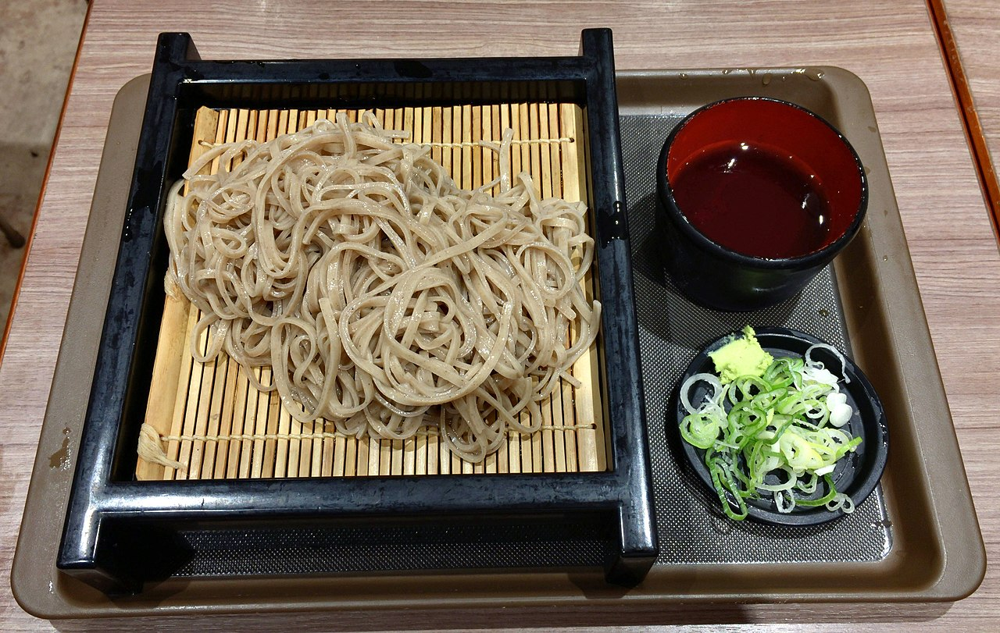
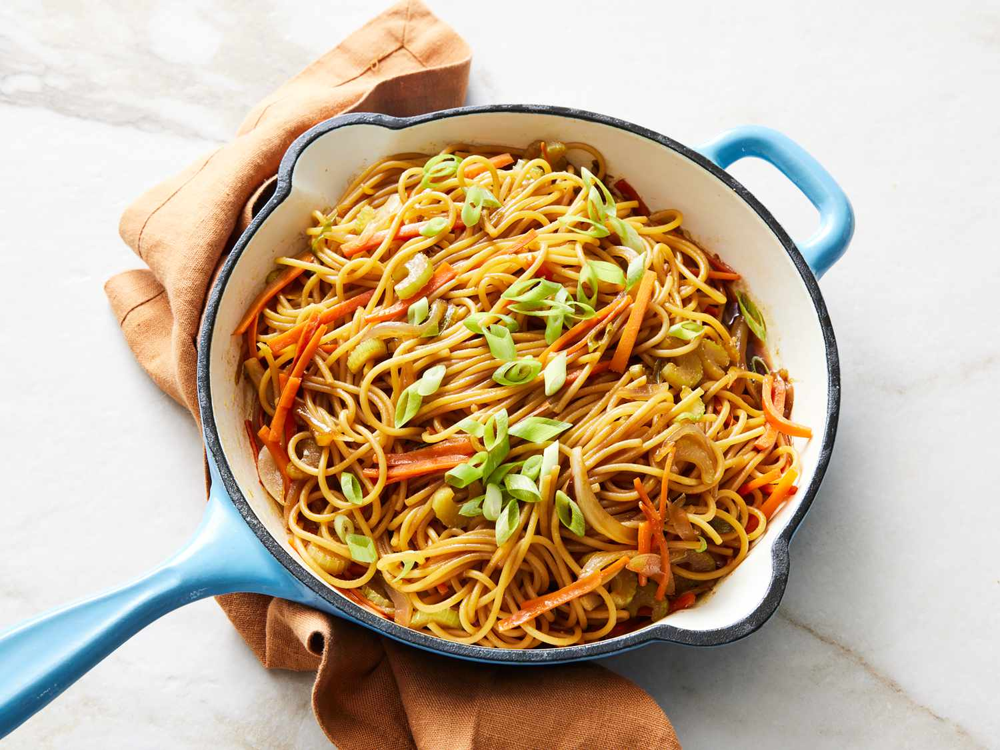

Ramen
Dive into a bowl of rich, savoury broth, and slurp up perfectly textured noodles in this classic Japanese ramen recipe.
Udon

Experience the comforting warmth of thick chewy noodles in a flavourful, umami-packed broth with this traditional udon dish.
Soba

Explore the delicate balance of nutty buckwheat noodles served cold with a soy-based dipping sauce.
Japchae
Indulge in the vibrant colours and textures of Korean japchae, a stir-fried dish featuring sweet potato noodles, veggies, and bulgogi.
Jjajangmyeon
Savour the bold flavours of Korean-Chinese cuisine with this classic dish, featuring chewy noodles smothered in a thick, savoury black bean sauce.
Naengmyeon

Cool down with a refreshing bowl of Korean naengmyeon, featuring chewy buckwheat noodles in a tangy, icy-cold broth topped with crips vegetables.
Lo Mein

Stir-fry your way to a delectable Chinese-American favourite with lo mein, combining soft noodles, colourful vegetables, and a soy-based sauce.
Lanzhou Lamian

Take a culinary journey to Northwest China with these hand-pulled noodles bathed in a rich aromatic beef broth and topped with flavourful beef slices.
Biangbiang Noodles
Tantalize your taste buds with the bold and wide Biangbiang noodles, a one-of-a-kind dish from Xi'an.